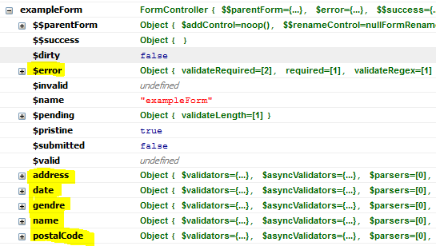

During form validation AngularJS stores context inside special controller FormController where can be
explored all errors that are present above the given form. If you name form by some name, the controller will be
injected into the scope with the given name.
For example on the basic demo we have named the form exampleForm, so that is why we
can retrieve the form controller from the scope by this name. The importance of this controller
is that it contains special object $error that collects all errors that are currently present above the
form. To be more precise the $error gathers all validation errors from the all controls that have
specified ngModel – so they participate on the validation. All of the wrapped controls against the
form validation and with the
ngModel directive can be also retrieved from the FormController by its name, so it is appropriate
to name all controls by some name. All of these controls have also $error object from which are collected
all errors for the whole form.

If you wish to display errors that have occurred during form validation using this library please follow next chapter. In contrast to the library way you can stay with the standard way provided by AngularJS. AngularJS provides two preferred options:
$error object. See
section Standard way in AngularJS up to 1.3.ngMessages. For more details
see section Standard way in AngularJS 1.3 and higher.
If you decide to use this library you can take advantage of some automatic ways how to display your validation errors.
There is validation-errors-location directive for specifying the location of validation error messages.
This directive can be placed on the <form> element or on the control eg. <input>
and this one overrides the directive defined on the <form>.
Default value of validation-errors-location directive is after{this} and means that
validation errors will be automatically inserted and displayed after the control element where error has occured. Instead of this you can use any function of
jqLite or jQuery for specifying
the element where to put the error message. You can use eg. after{parent()} or after{parent().parent()}, etc.
Another way is to use append mode. This does the similar functionality as the previous mode after,
but appends the errors messages after specified element. Examples: append{this}, append{parent()}, etc.
The last one and different way is to use explicit mode. This mode does not insert any
errors messages automatically either. It relies on the definition of specific directive validation-errors
that takes names of controls of which validation errors should be displayed. Names can be more concretized
with the validation name eg. name[required].
<div validation-errors="name date" validation-controller="libAngularForm"></div>
Please notice in the example above that it is sometimes necessary to combine validation-errors directive with the directive validation-controller.
It is necessary if you wish to insert validation errors outside the form. This is because on the page
can be more forms and that the information to which validation-errors relies can be lost. Otherwise if scope of the form
is not left then you can specify only the validation-errors directive.
The standard way
of displaying errors up to AngularJS 1.3 was to use conditional directives
that checked whether $error object contains some specific validation error.
<div>
<div ng-show="oldAngularForm.name.$error.required">Name is missing.</div>
<div ng-show="oldAngularForm.date.$error.validateRegex">Date of birth has invalid format.</div>
</div>
This way is straightforward, but sometimes can be lousy to specify whole path to the $error again
and again. Another disadvantage is impossibility to address all validation errors inside one control.
The standard way
of displaying errors in AngularJS 1.3 and higher is to use new directive ngMessages where should
be placed path to the $error object of some control. Messages that should be displayed for control
with given $error object are then inserted into this by specifying specieal directives ngMessage.
This directive ngMessage takes only the name of the validation.
<div> <div ng-messages="newAngularForm.name.$error"> <div ng-message="required">Name is missing.</div> <div ng-message="validateLength">Name is too short.</div> </div> <div ng-messages="newAngularForm.date.$error"> <div ng-message="validateRegex">Date of birth has invalid format.</div> </div> </div>
This way is again more less straightforward, has one big feature against the conditional way. If more validation errors
happens for one control then it displays only the one. After one error disappears then it displays the another remaining
error. One disadvantage could be that we have to still specify full path the $error object.
Another disadvantage is that automatic connection to the resources with error messages is still missing.